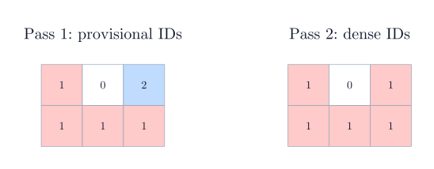
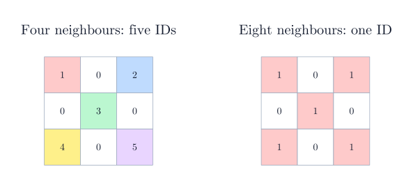
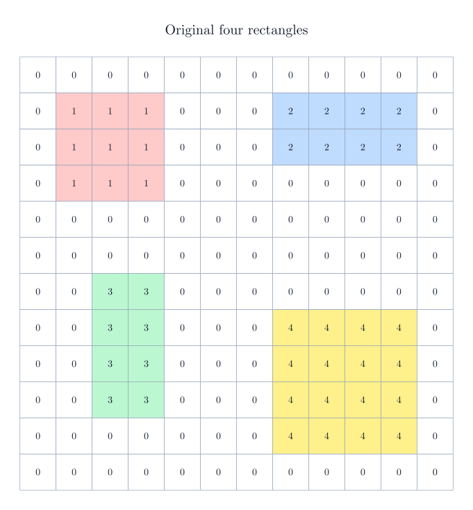
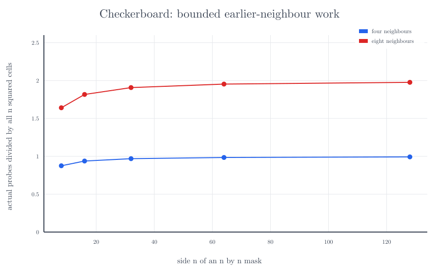

Connected Components: From Provisional IDs to Measured Blobs
Abstract
Given a rectangular image of foreground and background cells, assign the same positive integer to exactly those foreground cells joined by a path of permitted neighbours. This turns a mask into separate regions that can be counted and measured, but diagonal contact makes the connectivity choice consequential. This report follows actual provisional labels and union decisions, compares four- and eight-neighbour masks, reproduces the original four rectangles and measures their areas, centroids, bounds and grid perimeters. Balanced native union-find supports the complexity claim; exhaustive independent flood-fill checks test the resulting partitions.
The method: connected components of a pixel graph
Treat each nonzero input cell as a vertex. Under four-connectivity, two vertices are adjacent exactly when their row/column indices differ by a unit orthogonal step; eight-connectivity also permits the four diagonals. A component is a maximal set of vertices joined by paths. Background cells keep label zero. All nonzero integer values have the same foreground meaning, including negative values: this API does not perform an intensity threshold or same-colour segmentation.
The native algorithm scans rows from top to bottom and columns from left to right. Only earlier neighbours are needed: up and left for four-connectivity, plus upper-left and upper-right for eight-connectivity. An upper-right cell is already visited because its entire row precedes the current row.
At a foreground cell, create a fresh provisional label if no earlier neighbour has a label. Otherwise write the minimum of the earlier provisional labels and union its set with every admitted neighbour label. Actual attempts include self-unions and duplicate labels; only unions between distinct roots merge sets. A second row-major scan resolves representatives and gives each new component its next dense ID, starting at one. The final ID follows first component occurrence, not the numeric value or rank of its internal representative.
A bridge that really merges two provisional sets
The mask has first row (1,0,1) and second row (1,1,1). Initially its top foreground cells create IDs 1 and 2. Scanning the bottom-right cell admits up=2 and left=1; its assigned minimum is 1, and the union connects the two sets. The two-pass figure and tables come from one native execution, with no prefix reruns.
#include <dm/dm.hpp>
int main() {
std::filesystem::create_directories("build");
const auto t=dm::algorithms::connected_components_trace({{1,0,1},{1,1,1}});
dm::graphics::diagram_label_images({{t.provisional,"Pass 1: provisional IDs"},
{t.analysis.result.labels,"Pass 2: dense IDs"}}).save_svg("build/component_bridge.svg");
std::print("| foreground cell (row,col) | earlier provisional labels | assigned | new set | union record range |\n| :--- | :--- | ---: | :--- | :--- |\n");
for(const auto& cell:t.cells) {
std::string labels;
for(std::size_t k=0;k<cell.earlier_count;++k) labels+=std::format("{}{}",k?", ":"",cell.earlier_labels[k]);
std::print("| ({},{}) | {} | {} | {} | [{},{}) |\n",cell.row,cell.col,labels.empty()?"none":labels,cell.assigned,cell.created,cell.union_begin,cell.union_end);
}
std::print("\n| union record | operands | actual roots before | merged | winner | attached root |\n| ---: | :--- | :--- | :--- | ---: | ---: |\n");
for(std::size_t k=0;k<t.unions.size();++k) {
const auto& u=t.unions[k];
std::print("| {} | {}, {} | {}, {} | {} | {} | {} |\n",k,u.a,u.b,u.root_a,u.root_b,u.merged,u.winner,u.loser);
}
const auto& w=t.analysis.work;
std::print("\n{} provisional sets - {} successful union = {} final component. {} foreground cells; {} union attempts; {} find calls.\n",w.labels_created,w.successful_unions,t.analysis.result.count,w.foreground,w.union_calls,w.find_calls);
}| foreground cell (row,col) | earlier provisional labels | assigned | new set | union record range |
|---|---|---|---|---|
| (0,0) | none | 1 | true | [0,0) |
| (0,2) | none | 2 | true | [0,0) |
| (1,0) | 1 | 1 | false | [0,1) |
| (1,1) | 1 | 1 | false | [1,2) |
| (1,2) | 2, 1 | 1 | false | [2,4) |
| union record | operands | actual roots before | merged | winner | attached root |
|---|---|---|---|---|---|
| 0 | 1, 1 | 1, 1 | false | 1 | 0 |
| 1 | 1, 1 | 1, 1 | false | 1 | 0 |
| 2 | 1, 2 | 1, 2 | true | 1 | 2 |
| 3 | 1, 1 | 1, 1 | false | 1 | 0 |
2 provisional sets - 1 successful union = 1 final component. 5 foreground cells; 4 union attempts; 13 find calls.

Why is this correct? After each scanned foreground cell, the union-find sets represent the components of the foreground graph induced by the visited cells. A cell with no earlier neighbour starts a new component. Otherwise adding it joins exactly the earlier components incident to its edges. Every undirected edge is considered once, when its later endpoint is scanned. Induction therefore accounts for every permitted edge, including paths that merge old provisional sets much later. The second pass changes names rather than membership, so equal positive output IDs are equivalent to foreground connectivity.
The forest now uses union by rank with path halving. On equal rank, the smaller root ID wins; otherwise higher rank wins even if its ID is larger. A rank increase requires combining two equally ranked trees, so a rank-r root represents at least 2^r provisional sets. This bounds ranks and prevents arbitrary linear-depth attachments. Rank plus halving gives the amortised inverse-Ackermann bound. The former implementation used halving with unbalanced unions; the stated bound was not justified by those heuristics alone.
Diagonal contact changes the objects
A three-by-three checkerboard contains five foreground cells. With four-neighbour adjacency they are five singletons. With eight-neighbour adjacency they form one component through the centre. Connectivity is a modelling choice, not a cosmetic renaming of an unchanged partition.
#include <dm/dm.hpp>
int main() {
std::filesystem::create_directories("build");
const auto image=dm::algorithms::component_checkerboard(3,3);
const auto four=dm::algorithms::connected_components(image);
const auto eight=dm::algorithms::connected_components(image,true);
dm::graphics::diagram_label_images({{four.labels,"Four neighbours: five IDs"},
{eight.labels,"Eight neighbours: one ID"}}).save_svg("build/component_connectivity.svg");
std::print("| connectivity | components | component | area | grid perimeter | centroid row | centroid col |\n| :--- | ---: | ---: | ---: | ---: | ---: | ---: |\n");
for(const auto& [name,result]:std::array<std::pair<std::string_view,dm::algorithms::ConnectedComponents>,2>{{{"four",four},{"eight",eight}}})
for(const auto& s:dm::algorithms::connected_component_stats(result))
std::print("| {} | {} | {} | {} | {} | {:.3f} | {:.3f} |\n",name,result.count,s.label,s.area,s.perimeter4,s.centroid_row,s.centroid_col);
}| connectivity | components | component | area | grid perimeter | centroid row | centroid col |
|---|---|---|---|---|---|---|
| four | 5 | 1 | 1 | 4 | 0.000 | 0.000 |
| four | 5 | 2 | 1 | 4 | 0.000 | 2.000 |
| four | 5 | 3 | 1 | 4 | 1.000 | 1.000 |
| four | 5 | 4 | 1 | 4 | 2.000 | 0.000 |
| four | 5 | 5 | 1 | 4 | 2.000 | 2.000 |
| eight | 1 | 1 | 5 | 20 | 1.000 | 1.000 |

The reported perimeter is a discrete measurement: each exposed orthogonal unit cell edge contributes one, even when eight-connectivity created the component. For area A and E same-label orthogonal adjacent pairs,
Each shared edge removes two of the four per-cell edges. Holes contribute their inner exposed edges. This count is not a smooth Euclidean perimeter estimator; changing diagonal connectivity need not change its total for a fixed mask. The centroid is the mean of zero-based cell-centre row and column indices, and bounds include their minimum and maximum indices.
Original example: four separate rectangles
The original twelve-by-twelve mask is now a deterministic native fixture. Its inclusive rectangle bounds are (1,1)-(3,3), (1,7)-(2,10), (6,2)-(9,3) and (7,7)-(10,10), written as (row,column). It contains 41 foreground cells and 103 background cells. Both connectivity choices leave four regions.
#include <dm/dm.hpp>
int main() {
std::filesystem::create_directories("build");
const auto image=dm::algorithms::component_blobs_example();
const auto a=dm::algorithms::connected_components_analyze(image);
const auto eight=dm::algorithms::connected_components(image,true);
dm::graphics::diagram_label_images({{a.result.labels,"Original four rectangles"}})
.save_svg("build/connected_components.svg");
std::print("| ID | area | inclusive rows | inclusive columns | centroid (row,col) | exposed grid edges |\n| ---: | ---: | :--- | :--- | :--- | ---: |\n");
std::size_t area=0;
for(const auto& s:dm::algorithms::connected_component_stats(a.result)) {
std::print("| {} | {} | [{},{}] | [{},{}] | ({:.1f},{:.1f}) | {} |\n",s.label,s.area,s.min_row,s.max_row,s.min_col,s.max_col,s.centroid_row,s.centroid_col,s.perimeter4);
area+=s.area;
}
const auto& w=a.work;
std::print("\nComponents: {}; eight-neighbour count: {}; equal label maps: {}. Foreground area: {}.\n",a.result.count,eight.count,a.result.labels==eight.labels,area);
std::print("Provisional sets: {}; successful unions: {}; all union attempts: {}; find calls: {}.\n",w.labels_created,w.successful_unions,w.union_calls,w.find_calls);
}| ID | area | inclusive rows | inclusive columns | centroid (row,col) | exposed grid edges |
|---|---|---|---|---|---|
| 1 | 9 | [1,3] | [1,3] | (2.0,2.0) | 12 |
| 2 | 8 | [1,2] | [7,10] | (1.5,8.5) | 12 |
| 3 | 8 | [6,9] | [2,3] | (7.5,2.5) | 12 |
| 4 | 16 | [7,10] | [7,10] | (8.5,8.5) | 16 |
Components: 4; eight-neighbour count: 4; equal label maps: true. Foreground area: 41. Provisional sets: 4; successful unions: 0; all union attempts: 56; find calls: 153.

An a-by-b rectangle has area ab, grid perimeter 2(a+b) and centroid halfway between each inclusive pair of bounds. The table checks all three formulas. Each rectangle creates just one provisional set, so this original example has zero successful unions. Its many redundant union attempts still perform real work. The bridge example supplies the equivalence merge that the original four-rectangle illustration did not actually exercise.
Checking counts, connectivity and operation bounds
A rows-by-cols checkerboard beginning with foreground at (0,0) has F=ceil(rows·cols/2) foreground cells. Four-connectivity makes every cell a singleton. If both dimensions are at least two, eight-connectivity joins them all: diagonal steps connect successive rows, and alternating cells in a row connect through the neighbouring row. A single row or column has no usable diagonals and keeps F components. The distinction matters for degenerate images.
#include <dm/dm.hpp>
int main() {
std::filesystem::create_directories("build");
std::vector<double> side,probes4,probes8;
std::print("| square side | cells | foreground | four-neighbour count | eight-neighbour count | eight provisional sets | successful unions | eight union attempts | eight halving steps |\n| ---: | ---: | ---: | ---: | ---: | ---: | ---: | ---: | ---: |\n");
for(std::size_t n:{8,16,32,64,128}) {
const auto image=dm::algorithms::component_checkerboard(n,n);
const auto four=dm::algorithms::connected_components_analyze(image);
const auto eight=dm::algorithms::connected_components_analyze(image,true);
const auto& w=eight.work;
std::print("| {} | {} | {} | {} | {} | {} | {} | {} | {} |\n",n,n*n,w.foreground,four.result.count,eight.result.count,w.labels_created,w.successful_unions,w.union_calls,w.find_steps);
side.push_back(n);probes4.push_back(double(four.work.neighbor_probes)/(n*n));
probes8.push_back(double(w.neighbor_probes)/(n*n));
if(four.result.count!=int((n*n+1)/2) || eight.result.count!=1) return 1;
}
auto plot=dm::graphics::RPlot::create();
plot.line(side,probes4,"four neighbours",{37,99,235},2).points(side,probes4,"",{37,99,235},5)
.line(side,probes8,"eight neighbours",{220,38,38},2).points(side,probes8,"",{220,38,38},5)
.legend({"four neighbours","eight neighbours"},{{37,99,235},{220,38,38}})
.title("Checkerboard: bounded earlier-neighbour work")
.x_label("side n of an n by n mask").y_label("actual probes divided by all n squared cells")
.y_limits(0,2.6).size(900,560).save_svg("build/component_work.svg");
}| square side | cells | foreground | four-neighbour count | eight-neighbour count | eight provisional sets | successful unions | eight union attempts | eight halving steps |
|---|---|---|---|---|---|---|---|---|
| 8 | 64 | 32 | 32 | 1 | 4 | 3 | 49 | 45 |
| 16 | 256 | 128 | 128 | 1 | 8 | 7 | 225 | 245 |
| 32 | 1024 | 512 | 512 | 1 | 16 | 15 | 961 | 1125 |
| 64 | 4096 | 2048 | 2048 | 1 | 32 | 31 | 3969 | 4805 |
| 128 | 16384 | 8192 | 8192 | 1 | 64 | 63 | 16129 | 19845 |

For N cells and F foreground cells, both scans visit N positions. Each foreground cell inspects at most two or four earlier positions and attempts at most that many unions. If U is the actual union-call count, there are exactly 2U+F find calls: two per attempted union and one per foreground cell during remapping. There are P≤F provisional sets, and each successful union decreases their number by one; the final count is P minus successful unions.
Balanced union with halving gives O(N α(N)) scan/forest work, plus O(R) shape validation and row storage for R rows. The explicit O(R+N α(N)) bound also covers valid zero-width images. Output and forest storage are O(R+N); optional actual history remains O(R+N) because it has F cell records, U≤4F union records and owned maps/forest tables. The legacy result-only and analysis paths do not allocate those histories. Measurements need O(R+N+count) work and O(count) additional storage. No external dataset is needed for these exact geometric and combinatorial checks.
Validation, limits and measurement semantics
#include <dm/dm.hpp>
int main() {
using namespace dm::algorithms;
const std::vector<std::vector<int>> bridge{{1,0,1},{1,1,1}};
const auto exact=connected_components_trace(bridge,false,{6,9});
std::print("Exact caps: {} cells, {} actual history records; {} component.\n",exact.analysis.work.validated_cells,exact.cells.size()+exact.unions.size(),exact.analysis.result.count);
try { (void)connected_components_trace(bridge,false,{6,8});return 1; }
catch(const std::length_error&) {std::print("One-below event cap rejects the nine-record history.\n");}
try { (void)connected_components_trace({{},{1}},false,{1,1});return 1; }
catch(const std::invalid_argument&) {std::print("Ragged rows are rejected even after an empty first row.\n");}
const auto empty=connected_components(std::vector<std::vector<int>>(3));
std::print("A three-row zero-width image retains {} rows and {} components.\n",empty.labels.size(),empty.count);
const auto external=connected_component_stats(ConnectedComponents{{{1,0,1}},1});
std::print("An externally supplied disconnected ID is measured as one group: area {}, grid perimeter {}.\n",external[0].area,external[0].perimeter4);
try { (void)connected_component_stats(ConnectedComponents{{{1,3,3}},3});return 1; }
catch(const std::invalid_argument&) {std::print("Missing dense IDs are rejected by measurement.\n");}
}Exact caps: 6 cells, 9 actual history records; 1 component. One-below event cap rejects the nine-record history. Ragged rows are rejected even after an empty first row. A three-row zero-width image retains 3 rows and 0 components. An externally supplied disconnected ID is measured as one group: area 2, grid perimeter 8. Missing dense IDs are rejected by measurement.
Shape validation covers every row before result allocation or cell caps. A rectangular zero-width image is valid; a later nonempty row after an empty first row is ragged and throws. All image indices use size_t. Positive provisional IDs remain int for compatibility, with an explicit INT_MAX exhaustion check. The original result fields and deterministic row-major dense-ID order remain.
Positive max_cells is a complete-image preflight. max_events counts actual foreground-cell plus union-attempt records online; background does not consume history entries. Zero disables either optional cap, and analysis ignores the history cap. Failure returns no partial result or input mutation. Work counters are checked rather than silently wrapping. Every trace owns its maps, decisions and final forest; colouring performs no extra union/find operations.
Measurement validates shape, label ranges, count and complete dense-ID presence. It summarises supplied labels without proving their connectivity. Passing a produced labelling gives connected regions by the algorithm's contract; passing an externally assembled map groups whichever cells share an ID. Colours cycle after eight positive IDs in the grid renderer, so numerical IDs remain the identity when a figure contains more regions than colours.
Conclusion
The bridge exposes the actual provisional-set merge; diagonal contact shows why four- and eight-connectivity answer different questions. The original rectangles retain their four areas and now have verified centroids, bounds and exposed-edge measurements. Balanced native union-find, checked shapes, owned execution records and exact operation counts make the complexity and results inspectable.
References
- A. Rosenfeld and J. L. Pfaltz (1966), Sequential Operations in Digital Picture Processing, Journal of the ACM 13(4), 471–494. [Original paper hosted by the author](https://www.cs.virginia.edu/~jlp/66.sequential.op.pdf), [DOI](https://doi.org/10.1145/321356.321357). The current implementation uses a balanced union-find representation of provisional equivalences.
- R. E. Tarjan (1975), Efficiency of a Good But Not Linear Set Union Algorithm, Journal of the ACM 22(2), 215–225. [DOI](https://doi.org/10.1145/321879.321884).
- R. E. Tarjan and J. van Leeuwen (1984), Worst-Case Analysis of Set Union Algorithms, Journal of the ACM 31(2), 245–281. [DOI](https://doi.org/10.1145/62.2160). The balanced rank-plus-halving variant supports the stated amortised bound; actual histories and measurements are native implementation additions.